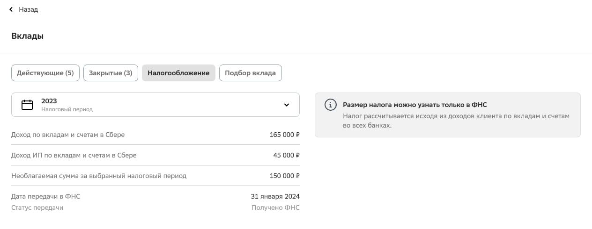

6 000 звонков в месяц. Оператор тратил на каждый 7 минут. AI‑агент справляется за 5 минут
Агент закрыл ~70% обращений без эскалации на оператора. Остальные 30% — негатив клиента (переход на оператора) или вопрос не по теме (возврат для переклассификации). Критерий запуска — 85%+ точности — был пройден на пилоте из ~300 диалогов.
В 2025 году в банке запустили стратегию агентизации контакт-центра — долгосрочный переход от консультаций людьми к виртуальному ассистенту на базе мультиагентной системы, неотличимому от человека.
Продуктовые команды запускают AI‑агентов в своих зонах ответственности. Каждый агент закрывает отдельную тематику и даёт измеримый эффект в FTE.
Задача: автоматизировать консультации по налогам на доходы по вкладам с помощью AI‑агента.
Цель: сократить FTE и снизить нагрузку на поддержку в пиковый налоговый период.
С 2024 года доходы по вкладам облагаются налогом. Для клиентов это была новая ситуация — они не понимали, как всё устроено, и начинали звонить в поддержку.
Сначала я проверил с бизнесом, подходит ли тема для агента: консультации длинные (6–7 минут), вопросы типовые, логика легко формализуется. По теме — ~6 000 звонков в месяц с пиком осенью.
Прослушал ~120 записей реальных звонков в поддержку. Выделил два типовых сценария: клиент сначала разбирается в общем — как работает налог, либо сразу уточняет персональные данные.
Персональные данные клиента находились в SmartCare, а справочная информация — в отдельной интерактивной схеме. На переключение уходило от 20 секунд до 2 минут в рамках одного звонка.

Интерфейс SmartCare, который операторы использовали для консультаций
Много времени уходило на поиск информации и переключение между источниками, а не на саму консультацию.
Параллельно с исследованием звонков я общался с командой канала виртуального ассистента, чтобы понять технические рамки интеграции.
Сроки поджимали — выделить отдельный интент не успевали. Агент встроен в существующий интент и вызывается по ключевому слову «налог». Платформа накладывает жёсткое ограничение — до 7 секунд на ответ, после чего контекст сбрасывается.
До проектирования архитектуры договорились, как агент должен вести себя в сложных ситуациях: при несогласии клиента с суммами — эскалация на оператора, при ошибочной тематике — возврат в IVR для переклассификации, для фиксации данных — SMS со ссылкой на справку о доходах.
Планировщик → Исполнитель → Критик
Один агент последовательно выполнял три роли. Терял контекст, формировал длинные ответы, не укладывался в лимит 7 секунд.
Маршрутизатор + Критик + Определение периода
Один шаг — один источник. Быстро, предсказуемо, укладывается в ограничения. Бизнес обновляет RAG-базу самостоятельно.
Один шаг диалога — один источник данных
Изначально хотели хранить справочную информацию в промпте маршрутизатора. Но реальных вопросов оказалось слишком много — промпт раздувался и замедлял ответы.
Вынесли справочную базу в RAG: бизнес заполнял её в формате «вопрос — ответ». Стало быстрее и проще обновлять.
Работал через Гигапромпт — внутренний конструктор банка. Писал промпт, тестировал на типичных фразах клиентов, бэкендер интегрировал в код, вместе с аналитиком валидировали и итерировали до 85%+ точности.
Роль: администратор на первой линии поддержки клиентов по вопросам налогов.
Ключевые правила: начислением налогов занимается ФНС, банк называет только сумму процентного дохода. В текущем году платим за прошлый.
Стиль: живая и естественная речь. Без «Сейчас подумаю» — клиенту важен ответ по сути.
Завершение: убедиться, что вопрос решён. Если да — добавить слово «КОНЕЦ».
Определить год, о котором идёт речь в вопросе клиента. Ответ — только год из четырёх цифр. Если год не указан → прошлый год.
Задача: проверить, что исполнитель правильно понял вопрос и полностью закрыл потребность.
Проверяется смысл ответа, а не точность формулировок.
Результат: если ответ соответствует вопросу → «success». Если нет → аргументы, почему.
Критерий запуска: не менее 85% успешных ответов. Успешный ответ — правильный выбор источника + корректный ответ по существу + правильное завершение диалога.
Оценивали вручную: прослушивал записи звонков с аналитиком, фиксировал ошибки, дорабатывал промпты.
1. Внутреннее тестирование на типичных фразах клиентов
2. Пилот с командой и бизнесом → ~300 реальных звонков → 85%+
3. Постепенная раскатка: 10% → 20% → 30% → 100%
Провёл исследование — прослушал ~120 звонков, работал с бизнесом и командой виртуального ассистента. Спроектировал архитектуру агента-маршрутизатора с валидацией через критика. Написал 3 промпта с ограничениями, правилами общения и стилем ответов. Провалидировал ~300 диалогов вручную, итерируя до 85%+ точности.
Тематика полностью закрыта агентом. За время запуска негативных реакций не зафиксировали — большинство клиентов не догадывалось, что разговаривает с AI.
Позвоните на 900 и скажите «налог на вклады»
Вам ответит AI‑агент, которого я спроектировал